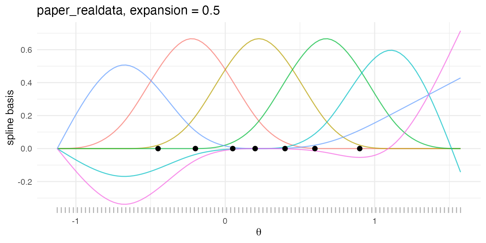
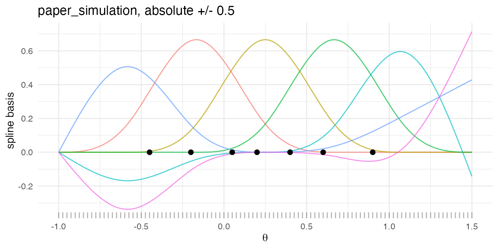
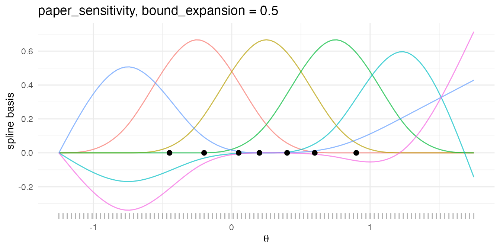
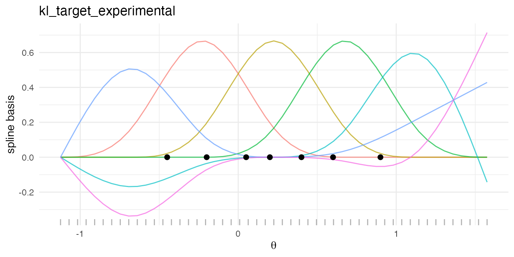
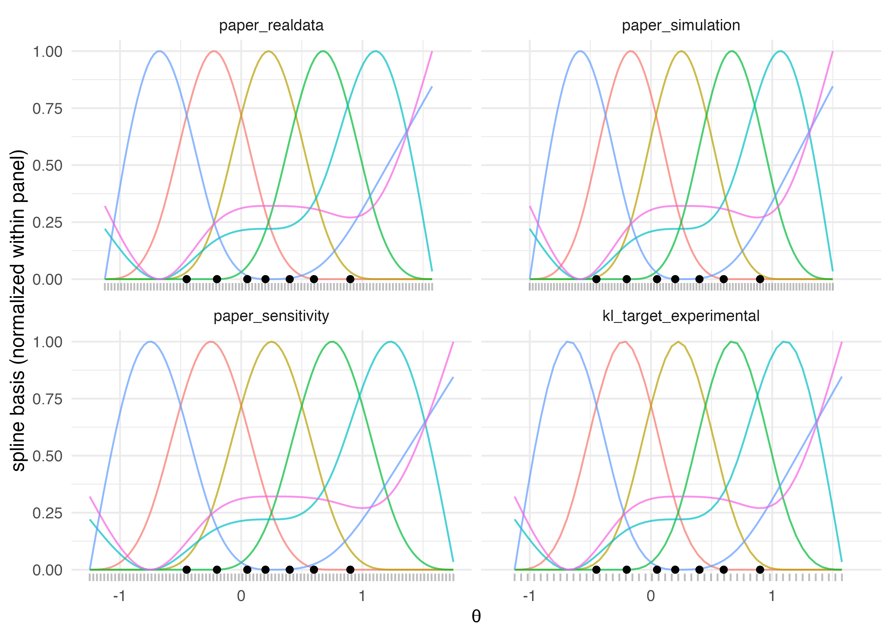

Why the grid matters
bayesEfron represents the mixing distribution
on a discrete support of length
together with a
length-
natural-cubic-spline basis built on that support. The Stan model never
sees a continuous
:
it sees the log-spline coefficients
that map, via the basis matrix
,
to the discrete probabilities
at the
grid points. The grid is therefore not a presentation detail; it is the
support on which
is defined.
Three design choices govern that support — the lower and upper
endpoints, the number of points between them, and the spline degrees of
freedom. make_efron_grid() exposes four named recipes that
fix the first two for the analyst: paper_realdata,
paper_simulation, paper_sensitivity, and
kl_target_experimental. Each recipe encodes a different
rule for the endpoints, with L and
left at sensible defaults.
When the grid is too narrow, the spline basis cannot represent mass that the data place outside the support, and the per-site posteriors develop pile-ups against the boundary. When it is too wide, the basis spends degrees of freedom on regions where should be exactly zero, and the posterior mean of acquires diffuse tails that suppress shrinkage in the centre. The recipes below fix the endpoints by formulas the package treats as part of its public contract; this vignette shows what those formulas produce on a shared toy dataset and how to choose between them.
A shared toy dataset
The following seven-site dataset is used throughout.
theta_hat is the observed per-site estimate,
sigma is the within-study standard error, and
theta_true is the oracle vector used by the two
simulation-only recipes.
theta_hat <- c(-0.45, -0.20, 0.05, 0.20, 0.40, 0.60, 0.90)
sigma <- c( 0.18, 0.22, 0.20, 0.16, 0.19, 0.24, 0.21)
theta_true <- c(-0.50, -0.10, 0.00, 0.25, 0.45, 0.70, 1.00)
toy <- data.frame(
site = paste0("site_", 1:7),
theta_hat = theta_hat,
sigma = sigma,
theta_true = theta_true
)
toy
#> site theta_hat sigma theta_true
#> 1 site_1 -0.45 0.18 -0.50
#> 2 site_2 -0.20 0.22 -0.10
#> 3 site_3 0.05 0.20 0.00
#> 4 site_4 0.20 0.16 0.25
#> 5 site_5 0.40 0.19 0.45
#> 6 site_6 0.60 0.24 0.70
#> 7 site_7 0.90 0.21 1.00The observed range of theta_hat spans
units; the oracle range of theta_true spans
units. The recipes differ in which of the two ranges they read and by
how much they widen it.
Recipe 1 — paper_realdata
The default recipe takes the observed range
and expands it symmetrically by expansion times the range
width. With the package default expansion = 0.5 the support
extends
of the observed range past each endpoint.
g_real <- make_efron_grid(
theta_hat = theta_hat,
sigma = sigma,
grid_method = "paper_realdata"
)
g_real$grid_method
#> [1] "paper_realdata"
c(L = g_real$L, M = g_real$M, expansion = g_real$expansion)
#> L M expansion
#> 101.0 6.0 0.5
range(g_real$grid)
#> [1] -1.125 1.575
g_real$attribution
#> $formula
#> [1] "paper_realdata_seq"
#>
#> $source
#> [1] "Lee & Sui (2025) Part_07_Real-World Application.R:228-236"The returned list carries the same eight fields for every recipe:
grid, B, M, L,
expansion, kappa, grid_method,
and attribution. The first four describe the discrete
support and basis. expansion records the range-relative
widening factor that was applied (an NA_real_ when the
recipe does not use one). kappa is the KL target
(NULL here; only meaningful for the experimental recipe).
attribution records the formula tag and the source file
lineage so downstream consumers can audit which recipe produced the
grid.
The plot below shows the grid points as a rug along the bottom of the
panel, the seven observed theta_hat values as labelled
points, and the six spline-basis curves overlaid. The basis is the
matrix returned in g_real$B; each column is one
natural-cubic-spline basis function evaluated on the grid.
plot_grid <- function(g, theta_hat, label) {
basis_df <- data.frame(
x = rep(g$grid, ncol(g$B)),
y = as.numeric(g$B),
basis = factor(rep(seq_len(ncol(g$B)), each = length(g$grid)))
)
ggplot2::ggplot() +
ggplot2::geom_line(
data = basis_df,
ggplot2::aes(x = x, y = y, colour = basis),
alpha = 0.7
) +
ggplot2::geom_rug(
data = data.frame(x = g$grid),
ggplot2::aes(x = x), sides = "b", alpha = 0.3
) +
ggplot2::geom_point(
data = data.frame(x = theta_hat, y = 0),
ggplot2::aes(x = x, y = y), colour = "black", size = 2
) +
ggplot2::labs(
title = label,
x = expression(theta),
y = "spline basis"
) +
ggplot2::guides(colour = "none") +
ggplot2::theme_minimal()
}
plot_grid(g_real, theta_hat, label = "paper_realdata, expansion = 0.5")
Recipe 2 — paper_simulation
The simulation recipe is oracle-aware: it reads the oracle vector
theta_true and sets the endpoints to
. The widening is an
absolute
-unit
pad, not a range-relative fraction; this matches the formula used in the
paper’s simulation study. expansion is consequently
reported as NA_real_.
g_sim <- make_efron_grid(
theta_hat = theta_hat,
sigma = sigma,
theta_true = theta_true,
grid_method = "paper_simulation"
)
g_sim$grid_method
#> [1] "paper_simulation"
c(L = g_sim$L, M = g_sim$M)
#> L M
#> 101 6
g_sim$expansion
#> [1] NA
range(g_sim$grid)
#> [1] -1.0 1.5
g_sim$attribution
#> $formula
#> [1] "paper_simulation_absolute"
#>
#> $source
#> [1] "Lee & Sui (2025) Part_02_Model Estimation and Performance Evaluation.R:100-106"The recipe requires theta_true; calling it without an
oracle returns a bef_err_grid_oracle_required condition.
That is by design — the simulation rule is only well-defined when a
known truth exists, and silently falling back to the observed range
would mask the distinction between the two regimes.
plot_grid(g_sim, theta_hat, label = "paper_simulation, absolute +/- 0.5")
Because the oracle range exceeds the observed range here, the simulation grid is wider on the left endpoint than the real-data grid. In small- simulations the observed range can be substantially narrower than the support of , which is exactly the case the absolute-pad rule is designed for.
Recipe 3 — paper_sensitivity
The sensitivity recipe is also oracle-aware but uses a range-relative
widening, parameterised by bound_expansion. The endpoints
are
where
is the width of the oracle range and
is bound_expansion. The default is
.
g_sens <- make_efron_grid(
theta_hat = theta_hat,
sigma = sigma,
theta_true = theta_true,
grid_method = "paper_sensitivity",
bound_expansion = 0.5
)
g_sens$grid_method
#> [1] "paper_sensitivity"
c(L = g_sens$L, M = g_sens$M, bound_expansion = g_sens$expansion)
#> L M bound_expansion
#> 101.0 6.0 0.5
range(g_sens$grid)
#> [1] -1.25 1.75
g_sens$attribution
#> $formula
#> [1] "paper_sensitivity_relative"
#>
#> $source
#> [1] "Lee & Sui (2025) Part_04_Grid Resolution and Bounds Sensitivity Analysis.R:112-120"The expansion slot reports the effective
bound_expansion here, which is the source of the formula
tag paper_sensitivity_relative in the attribution record.
Sweeping bound_expansion over a small grid
(e.g. )
is the canonical way to read off how sensitive the per-site posterior
means and the posterior of
are to the choice of support — the exercise A6’s sensitivity section
walks through end to end. As with paper_simulation, an
oracle is required.
plot_grid(g_sens, theta_hat, label = "paper_sensitivity, bound_expansion = 0.5")
Recipe 4 — kl_target_experimental
The fourth recipe derives the grid spacing from a
Kullback-Leibler target
between adjacent Gaussian kernels of width
,
then sets
to the integer count that fills the expanded observed range at that
spacing. The formula is
and the default for
is
where $K = $ length(theta_hat). The function emits a
once-per-session disclaimer noting that this calibration is experimental
for heteroscedastic inputs; the call below wraps it in
suppressMessages() so the message does not appear in the
rendered vignette.
g_kl <- suppressMessages(
make_efron_grid(
theta_hat = theta_hat,
sigma = sigma,
grid_method = "kl_target_experimental"
)
)
g_kl$grid_method
#> [1] "kl_target_experimental"
c(L = g_kl$L, M = g_kl$M, expansion = g_kl$expansion, kappa = g_kl$kappa)
#> L M expansion kappa
#> 51.0000000 6.0000000 0.5000000 0.1428571
range(g_kl$grid)
#> [1] -1.125 1.575
g_kl$attribution
#> $formula
#> [1] "d = 2 * min(sigma) * sqrt(exp(2 * kappa) - 1); kappa default = 1 / length(theta_hat)"
#>
#> $source
#> [1] "ebnm::ebnm_scale_npmle() (grid_selection.R:91-107)"The recipe also enforces
:
if the KL spacing implies a count outside this window,
is clipped to the nearest boundary. The experimental disclaimer is
emitted once per session; an additional informational message is emitted
when the derived count is clipped to the [51, 300] bounds.
With the toy dataset above the implied count falls below
,
so
is held at the lower bound. The attribution string records the
underlying formula and credits the ebnm::ebnm_scale_npmle()
calibration that motivated it.
plot_grid(g_kl, theta_hat, label = "kl_target_experimental")
Side-by-side comparison
The 2 × 2 panel below assembles the four grids on a shared
-axis.
The basis curves are normalized to a common
y-range within each panel so the panels can be read side by side without
the basis amplitude dominating the comparison; the rug along the bottom
shows the grid points themselves, and the black points are the seven
observed theta_hat values.
grid_long <- function(g, recipe) {
B_norm <- apply(g$B, 2, function(col) {
rng <- range(col)
if (diff(rng) <= 0) col else (col - rng[1]) / diff(rng)
})
data.frame(
recipe = recipe,
x = rep(g$grid, ncol(B_norm)),
y = as.numeric(B_norm),
basis = factor(rep(seq_len(ncol(B_norm)), each = length(g$grid)))
)
}
basis_all <- rbind(
grid_long(g_real, "paper_realdata"),
grid_long(g_sim, "paper_simulation"),
grid_long(g_sens, "paper_sensitivity"),
grid_long(g_kl, "kl_target_experimental")
)
basis_all$recipe <- factor(
basis_all$recipe,
levels = c(
"paper_realdata", "paper_simulation",
"paper_sensitivity", "kl_target_experimental"
)
)
rug_all <- rbind(
data.frame(recipe = "paper_realdata", x = g_real$grid),
data.frame(recipe = "paper_simulation", x = g_sim$grid),
data.frame(recipe = "paper_sensitivity", x = g_sens$grid),
data.frame(recipe = "kl_target_experimental", x = g_kl$grid)
)
rug_all$recipe <- factor(rug_all$recipe, levels = levels(basis_all$recipe))
obs_all <- do.call(rbind, lapply(
levels(basis_all$recipe),
function(r) data.frame(recipe = r, x = theta_hat, y = 0)
))
obs_all$recipe <- factor(obs_all$recipe, levels = levels(basis_all$recipe))
ggplot2::ggplot() +
ggplot2::geom_line(
data = basis_all,
ggplot2::aes(x = x, y = y, colour = basis),
alpha = 0.7
) +
ggplot2::geom_rug(
data = rug_all,
ggplot2::aes(x = x), sides = "b", alpha = 0.25
) +
ggplot2::geom_point(
data = obs_all,
ggplot2::aes(x = x, y = y), colour = "black", size = 1.5
) +
ggplot2::facet_wrap(~ recipe, ncol = 2) +
ggplot2::labs(
x = expression(theta),
y = "spline basis (normalized within panel)"
) +
ggplot2::guides(colour = "none") +
ggplot2::theme_minimal()
Side-by-side comparison of the four grid recipes on the same seven-site toy dataset. Each panel shows the support points (rug), the observed theta_hat values (black points), and the natural-cubic-spline basis (coloured curves, normalized within panel).
Three patterns are visible. First, paper_realdata and
kl_target_experimental produce identical endpoints because
both read the observed range and apply the same default
expansion; they differ only in
(and therefore in the density of the rug and the resolution of the
spline basis on the same interval). Second,
paper_simulation and paper_sensitivity both
read the oracle range, but the simulation rule pads by an absolute
units on each side while the sensitivity rule pads by a fraction of the
oracle width. Third, the basis shape itself is governed entirely by the
support endpoints and
:
the interior knot placement is determined by splines::ns(),
so when two recipes produce the same endpoints they produce the same
basis shape and differ only in the resolution of the underlying
support.
A small results table
results <- data.frame(
recipe = c("paper_realdata", "paper_simulation",
"paper_sensitivity", "kl_target_experimental"),
L = c(g_real$L, g_sim$L, g_sens$L, g_kl$L),
M = c(g_real$M, g_sim$M, g_sens$M, g_kl$M),
expansion = c(g_real$expansion, g_sim$expansion,
g_sens$expansion, g_kl$expansion),
kappa = c(NA_real_, NA_real_, NA_real_, g_kl$kappa),
support_min = c(min(g_real$grid), min(g_sim$grid),
min(g_sens$grid), min(g_kl$grid)),
support_max = c(max(g_real$grid), max(g_sim$grid),
max(g_sens$grid), max(g_kl$grid)),
stringsAsFactors = FALSE
)
knitr::kable(
results,
digits = 3,
caption = paste(
"Grid summaries for the four recipes on the shared seven-site",
"toy dataset. `expansion` is NA for `paper_simulation` because",
"the absolute-pad rule does not use a range-relative factor;",
"`kappa` is NA for the three paper-faithful recipes."
)
)| recipe | L | M | expansion | kappa | support_min | support_max |
|---|---|---|---|---|---|---|
| paper_realdata | 101 | 6 | 0.5 | NA | -1.125 | 1.575 |
| paper_simulation | 101 | 6 | NA | NA | -1.000 | 1.500 |
| paper_sensitivity | 101 | 6 | 0.5 | NA | -1.250 | 1.750 |
| kl_target_experimental | 51 | 6 | 0.5 | 0.143 | -1.125 | 1.575 |
Picking a recipe
The decision tree the package documentation defends is short and data-driven.
Real data, no oracle. Use
paper_realdata. This is the default formake_efron_grid()andbayes_efron_fit(). The percent range-relative expansion is the rule used in the published real-data analysis and is intended to keep the posterior mass away from the grid boundary without making the support unnecessarily diffuse.Simulation with known truth, paper match. Use
paper_simulation. The absolute pad on the oracle range is the rule used in the paper’s simulation study, and matching it is the right choice for any replication of those numbers or for an extension of the simulation design.Sensitivity check on grid width. Use
paper_sensitivityand sweepbound_expansionover a small set (e.g. ). Posterior summaries that move materially across the sweep indicate that the grid endpoints are doing inferential work; summaries that are stable indicate that the choice of endpoint is not load-bearing for the inference. Requires an oracle.Experimental KL tuning. Use
kl_target_experimentalwith caution. The calibration is taken from theebnmpackage’s homoscedastic-input recipe, and its behavior on the heteroscedastic inputsbayesEfronaccepts is not validated against a published number. The once-per-session disclaimer is part of the recipe’s contract; downstream comparisons should preserve it so that consumers know the recipe’s status.
A pragmatic default is to fit paper_realdata first, then
re-fit under one or two alternative recipes (or under the same recipe
with a wider expansion) and inspect whether the per-site
posterior means, the posterior summary of
,
and the diagnostic record shift in any consequential way. A6’s
sensitivity section is the formal version of that check.
What’s next
-
A5 · Diagnostics in practice — the release-quality
checklist for the
diagnosticsattribute and thebef_diagnosticobject, including the diagnostic signatures of a too-narrow or too-wide grid. -
A6 · Plotting and visualization — the visual
diagnostics for
and the per-site posteriors, including a worked sensitivity sweep across
paper_sensitivitysettings. -
M4 · Grid construction and spline basis — the
methodological vignette with the formal specification of each recipe,
the monotonicity and rank-deficiency postconditions enforced by
make_efron_grid(), and the connection to Efron’s original log-spline construction.